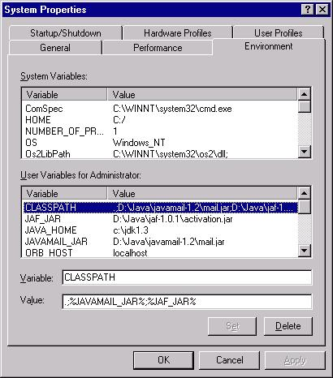

System Variables exist for all users while User Variables only exist for the current user. Only users with Administrator privileges are able to define System Variables. For this example, environment variables will be defined as User Variables.
If this is the first time the CLASSPATH environment variable is being defined, select the first User Variables entry (its name/value pair will show up below the User Variables list). Enter 'CLASSPATH' in the 'Variable:' text edit field.
If the CLASSPATH environment variable has already been previously defined, simply select it from the User Variables list.
There are a couple of ways of adding something to an environment variable. It can be added directly, or through the use of a separately defined environment variable.
When the JavaMail and Java Activation Framework (JAF) jar files are added directly to the CLASSPATH, the Value field should contain (for example) ".;D:\Java\javamail-1.2\mail.jar;D:\Java\jaf-1.0.1\activation.jar".
When the JavaMail and Java Activation Framework (JAF) jar files are
added to the CLASSPATH using separate environment variables, the Value
field should contain (for example) ".;%JAVAMAIL_JAR%;%JAF_JAR%"

Once you have finished updating the Value field, you must press the Set button. Then press OK. It is not necessary to reboot or log out, however these new settings will only be present in new Command Prompt windows. Any existing windows must be closed and reopened for the new settings to take effect. Any running Java applications which inherit the system CLASSPATH also need to be restarted.